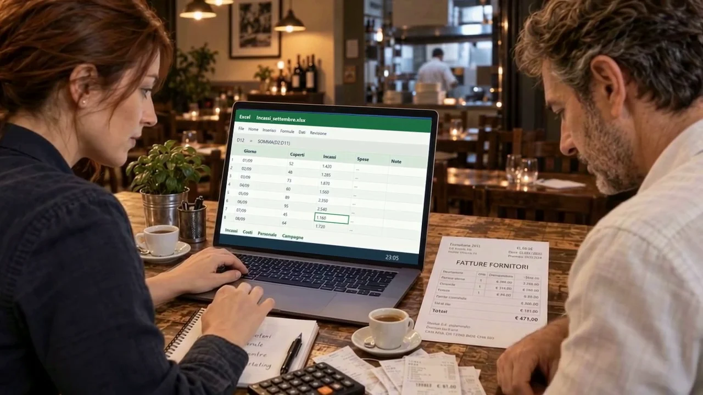

AUTOMAZIONI E AI PER LE PMI
La tua azienda.
Con tutti i suoi
superpoteri.
Vendite, costi, marketing e procedure. AILIV li collega in un unico cervello aziendale, costruito sui tuoi strumenti.
E tutto il resto dell’azienda.
Il ristorante è la loro storia. Il sistema si cuce sulla tua.
Check-up gratuito. Progetto su preventivo.
01 / DOPO UNA GIORNATA PIENA
L’azienda va.
Ma a quale prezzo?
Marco e Giulia hanno un ristorante che lavora. A fine serata, però, c’è ancora un’altra azienda da ricostruire: quella dentro file, gestionali e chat.

Un file per gli incassi. Un gestionale per i costi. Un altro per il marketing. Il collegamento lo fanno ancora loro.
02 / QUALCOSA COMINCIA A CAMBIARE
Dentro i tuoi strumenti
c’è molto di più.
AILIV collega ciò che usi già. Entra nel computer e guarda come.
Premi il pulsante, oppure tocca il logo sullo schermo.
03 / IL SISTEMA ENTRA IN AZIONE
Tre funzioni.
Una sola visione.
Collegare le informazioni, conservare il sapere, leggere tutto insieme. Tre funzioni che lavorano sullo stesso contesto aziendale.
01 / I COLLEGAMENTI
Ogni dato arriva al posto giusto.
Vendite, fatture, banca e marketing smettono di vivere separati. I collegamenti raccolgono i dati e aggiornano i processi con regole definite.
Il report delle vendite entra nel riepilogo, senza ricopiarlo ogni volta.
Personaggi e ambienti sono la metafora del film AILIV. Ogni sistema viene progettato sui processi reali dell’azienda.
UNA DOMANDA. IL CONTESTO COMPLETO.
Un reparto da solo
vede solo una parte.
Tocca una domanda e guarda quali informazioni devono incontrarsi per rispondere.
Una promozione che regga anche nei margini.
Metti insieme prodotti venduti, costo delle materie prime, risultati delle campagne e disponibilità del personale prima di decidere cosa spingere.
Esempi di ragionamento: mostrano il funzionamento, non dati o risposte di un cliente.
SU MISURA, DAL PRIMO COLLEGAMENTO
La tua azienda
ha già il suo modo.
Lo conosciamo, individuiamo i passaggi da automatizzare e costruiamo il sistema intorno alle persone e ai programmi che usate.
Come lo costruiamo insiemeGuardiamo il lavoro reale.
Strumenti, dati, passaggi e persone.
Facciamo funzionare il primo pezzo.
Un perimetro chiaro, con verifiche concrete.
Colleghiamo il resto.
Nuovi reparti, manutenzione e continuità.
FUORI DAL FILM
I collegamenti
li costruiamo davvero.

IL VERO SUPERPOTERE
Avere il controllo.
E una serata libera.
Report che si aggiornano. Procedure che restano.
Un’azienda che puoi leggere nel suo insieme.
PRIMA DI PARTIRE
Le domande
più concrete.
È solo per i ristoranti?
Il ristorante è l’esempio del film. Lavoriamo sui processi delle PMI: ristorazione, commercio, servizi e produzione. Il progetto parte dalla tua attività.
Devo cambiare i miei programmi?
Partiamo da quelli che usi. Nel check-up verifichiamo accessi, esportazioni e qualità dei dati per capire cosa si può collegare.
Il sistema fa tutto da solo?
Le automazioni eseguono passaggi definiti. L’AI aiuta ad analizzare le informazioni e preparare proposte. Eccezioni, approvazioni e responsabilità vengono concordate nel progetto.
Quanto costa?
Il check-up iniziale è gratuito. Progetto e manutenzione sono su preventivo, in base ai collegamenti e alle automazioni da costruire.